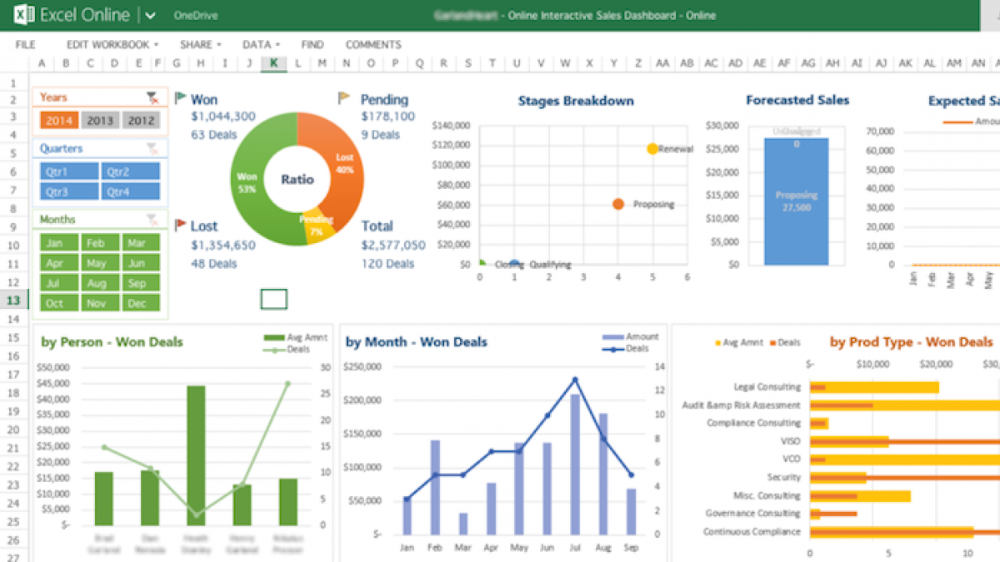
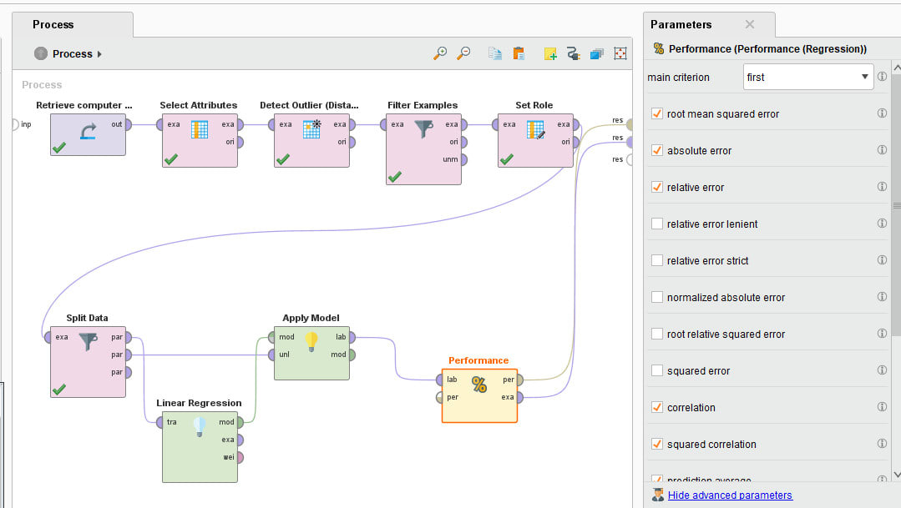

Herramientas para el análisis de datos
¿Qué se busca a la hora de elegir una herramienta para en análisis de datos? Todo depende de la profundidad esperada del análisis y el caso de estudio que se realice. A continuación, se nombrarán varias herramientas populares de inteligencia artificial para comenzar a analizar datasets y sacar conclusiones.
Excel

Actualmente, la herramienta más popular a nivel empresarial y personal para el mantenimiento y análisis de datos. La facilidad con la cual uno puede desempeñarse en esta herramienta la hace una de las elecciones más fáciles a realizar cuando no se sabe cual elegir. Cabe destacar que “fácil” no quiere decir poco poderosa, Excel se destaca por tener miles de funcionalidades distintas para la generación de reportes y análisis estadísticos de datos, así como también soporte para el desarrollo y aplicación de plugins externos para cálculos más complejos.
Ventajas:
- Fácil de aprender para su uso en el análisis de datos (especialmente en estadística).
- Gran cantidad de operaciones incorporadas en el programa así como también la capacidad de utilizarlas en conjunto para llegar otras más complejas
- No requiere mucha capacidad de la computadora para ejecutar.
Desventajas:
- Propietario de Microsoft y con uso únicamente por medio de pago.
- Si bien es fácil aprender de las capacidades más elementales, la curva de aprendizaje aumenta a medida que se desean hacer cálculos más complejos
Rapidminer

Programa enfocado a la minería de datos, de fácil uso y con una gran cantidad de operaciones. Es uno de los programas más utilizados en Data mining y se destaca principalmente por la potencia para la presentación y aplicación de subrutinas contenidas en “bloques” que hacen el crear flujos de trabajo con él sumamente intuitivo. Todos los bloques son parametrizables fácilmente y esto permite aplicar distintos algoritmos de machine learning (construidos nativamente en el programa) bajos distintos ambientes y configuraciones con el fin de maximizar la efectividad de la función resultante.
Ventajas:
- Generado de gráficas 3D para visualización de data con un solo botón
- Pre-procesamiento de datos guíado por una interfaz amigable
- Filtrado automático de datos erróneos (Outliers).
- Normalización de datos.
- Herramienta de análisis completo estandarizado con un solo botón (el cual pasa por todos los pasos de preprocesamiento de data, hasta la presentación de los hallazgos más importantes).
- Inmensa cantidad de tutoriales incorporados, tanto para procesos enteros en machine learning como también para cada uno de los bloques existentes.
Desventajas:
- Programa muy pesado de correr para computadoras de bajos requerimientos
- Uso bajo licencia para uso no estudiantil.
- Tiene tantos bloques que puede llegar a ser abrumador encontrar cual utilizara para ciertos escenarios.
Python
Python es un lenguaje de programación, conocido por ser uno de los
más modernos y más fáciles de utilizar actualmente. Si bien, cualquier
lenguaje de programación podría utilizarse para analizar datos, Python
es la herramienta por excelencia ya que al ser tan sencilla de aprender a
utilizar, es el nido para todos los desarrolladores del área de data
science. La forma en que está formado el lenguaje, lo hace atractivo
para un gran número de empresas y organizaciones open-source que no
paran de crear herramientas para en análisis de datos y machine learning
y las mantienen de forma constante. Un gran ejemplo de esto es Google,
quienes lanzaron quizás la librería más popular para el aprendizaje
automático, Tensorflow.
Tensorflow es una librería con un conjunto inmenso de operaciones y
métodos de aprendizaje automático para la generación de modelos con el
fin de analizar cualquier tipo de dataset, ya sea a partir de datos
escritos en tablas como también imágenes de cualquier tipo. Asimismo
incluye modelos ya entrenados en ciertas áreas de reconocimiento,
facilitando la implementación de rutinas para reconocimiento de
animales, personas, enfermedades, objetos (vehículos, señales de
tránsito, electrodomésticos), etc.
Ventajas:
- Uno de los lenguajes de programación más fácil de aprender.
- Su uso, al igual que el de sus librerías es completamente gratuito y libre.
- Se puede utilizar para analizar cualquier tipo de dataset indiscriminadamente.
- Gran conjunto de operaciones integradas
- Excelente soporte de la comunidad para funcionalidades importables en formato de librerías.
Desventajas:
- Al no ser un programa con interfaz gráfica como los vistos anteriormente, por más que sea un lenguaje de programación fácil de aprender, puede generar dolores de cabeza a personas en el área del análisis de datos que no estén muy familiarizados con la informática.
- Susceptible a mayores errores que otros programas, ya que las rutinas, si bien utilizan operaciones ya definidas, deben ser programadas a mano.
Otras herramientas útiles:
- Microsoft Power BI
- Tableau
- IBM Watson
- Azure Machine Learning
- Amazon SageMaker